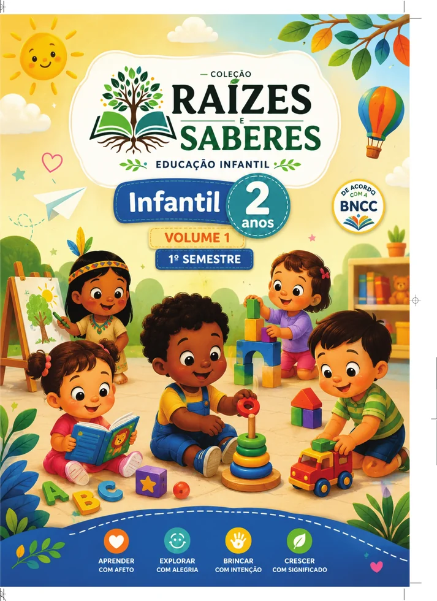
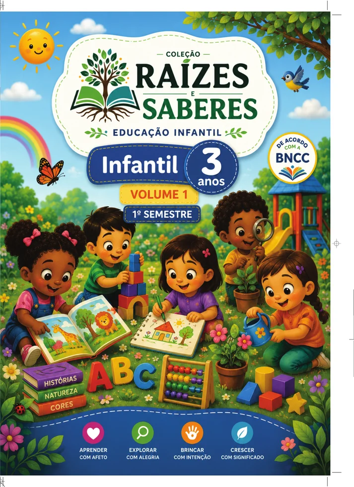
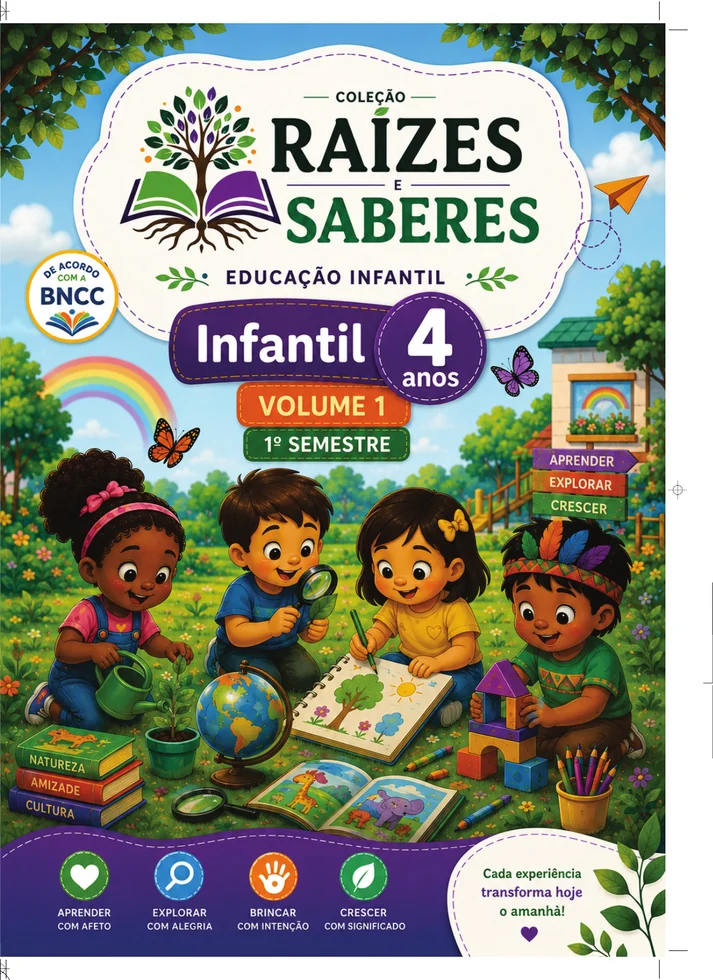
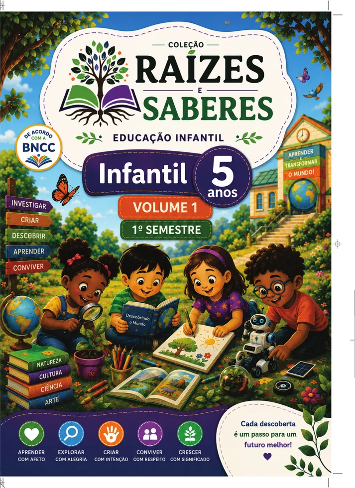

Ensino integrado
Livros, plataforma digital, biblioteca, avaliacoes e formacao conectados na mesma jornada.
Ecossistema Educacional
Uma plataforma integrada para redes de ensino, escolas, professores e estudantes.
Conteudos, biblioteca digital, avaliacoes, formacao docente e gestao pedagogica em uma experiencia unica para apoiar escolas, professores, estudantes e secretarias de educacao.

Ecossistema Educacional
O Ecossistema Educacional Raizes e Saberes integra materiais didaticos, tecnologia educacional, formacao continuada, avaliacao da aprendizagem e recursos pedagogicos em uma unica experiencia.
Livros, plataforma digital, biblioteca, avaliacoes e formacao conectados na mesma jornada.
Recursos praticos, organizados e alinhados ao trabalho pedagogico em sala de aula.
Indicadores, diagnosticos e relatorios para orientar decisoes de escolas e redes de ensino.
Uma proposta que valoriza conhecimento, cultura, inclusao e compromisso com a aprendizagem.
Educacao Infantil
Materiais didaticos organizados para apoiar o desenvolvimento infantil com linguagem acolhedora, propostas pedagogicas estruturadas e experiencias significativas de aprendizagem.
Explore a Colecao Educacao Infantil
Primeiras experiencias, acolhimento e descobertas.

Exploracao, linguagem, convivencia e autonomia.

Curiosidade, cultura, brincadeiras e investigacao.

Preparacao, repertorio e continuidade da aprendizagem.
Plataforma Digital
A Plataforma Digital Raizes e Saberes organiza recursos pedagogicos, indicadores de aprendizagem e ferramentas de apoio em uma experiencia integrada para escolas e redes.
Acervo digital, livros, trilhas de leitura e recursos complementares para enriquecer a aprendizagem.
Indicadores e relatorios para acompanhar evolucao, participacao, frequencia e desempenho.
Ferramentas para planejar, ensinar, avaliar e acessar conteudos de apoio ao trabalho pedagogico.
Visao organizada para secretarias, escolas e gestores acompanharem decisoes em escala.
Conheca o Ecossistema em Acao
Uma apresentacao institucional para demonstrar a experiencia completa do ecossistema, reunindo plataforma digital, biblioteca, recursos pedagogicos e gestao educacional.
Universidade Raizes e Saberes
A Universidade Raizes e Saberes organiza trilhas, videoaulas, formacoes e certificacoes em um ambiente preparado para apoiar o desenvolvimento profissional da educacao.
Conheca a Universidade Raizes e SaberesProgramas organizados para apoiar professores, coordenadores e equipes gestoras.
Aulas em formato digital para estudo, revisao e aprofundamento pedagogico.
Percursos formativos estruturados por temas, etapas e objetivos educacionais.
Registro de progresso e certificacao para valorizar a evolucao profissional.
Biblioteca Digital
Biblioteca organizada para apoiar leitura, consulta, estudo e acesso a materiais digitais que ampliam a experiencia de aprendizagem dentro e fora da sala de aula.
Avalia+
O Avalia+ organiza diagnosticos, acompanhamento continuo e relatorios inteligentes para apoiar redes, escolas e professores na tomada de decisoes sobre a aprendizagem.
Conheca o Avalia+Mapeamento claro de desempenho por etapa, turma, aluno e habilidade.
Evolucao pedagogica monitorada ao longo do tempo com indicadores organizados.
Visualizacoes preparadas para professores, gestores escolares e secretarias.
Informacoes praticas para orientar intervencoes, planejamento e acompanhamento.
Resultados
A area de resultados foi estruturada para receber dados oficiais da plataforma, permitindo apresentar evolucao, engajamento e acompanhamento pedagogico com clareza.
Campo preparado para inserir resultados reais de desempenho e progressao dos estudantes.
Preparado para apresentar dados oficiais de acesso, presenca, engajamento e atividades realizadas.
Preparado para apresentar indicadores de uso por professores, turmas e coordenacao pedagogica.
Area pronta para consolidar informacoes de escolas, relatorios e decisoes da secretaria.
Demonstracao institucional
A Raizes e Saberes Digital integra conteudos, biblioteca, formacao, avaliacao e gestao em uma experiencia preparada para apresentacoes, secretarias de educacao e redes de ensino.
Demonstracao
Solicite uma conversa comercial para conhecer a proposta, visualizar a plataforma e avaliar como o ecossistema pode apoiar sua escola ou rede de ensino.